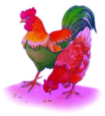

ก่อนบทที่ ๑

ก่อนเริ่มบทที่ ๑
เตรียมความพร้อม
ดูภาพ ฟังพยัญชนะ และฝึกลากเส้นเขียนตามแบบฝึกเล่ม ๑
เริ่มต้นฟัง · อ่าน · เขียน
เพลินภาษา ป.1
กำลังตรวจสอบไฟล์สำหรับการเรียน...
0%
เริ่มจากการเตรียมความพร้อม แล้วเลือกเรียนครบทุกบท พร้อมภาพต้นฉบับ เสียงอ่าน กิจกรรม และแบบฝึกหัด
เริ่มจากเตรียมความพร้อม หรือเลือกบทเรียนที่ต้องการ
พร้อมภาพต้นฉบับ เสียงอ่าน และกิจกรรมทบทวน

ดูภาพ ฟังพยัญชนะ และฝึกลากเส้นเขียนตามแบบฝึกเล่ม ๑

ปูพื้นพยัญชนะไทย บัตรคำ ฟังเรื่อง จับคู่คำกับภาพ และเกมตรวจความเข้าใจ

รู้จักคำ นำเรื่อง ผ่านเพลง เกมทายภาพ บิงโก และขบวนรถไฟประโยค

คำจากบท: ไก่ ลูกช้าง ชู จ้อง ร้อง เรียก เพื่อน เด็ก และฝึกสระ เอ–แอ

คำจากบท: คอ ผูก ลาน อ้อย เล่นน้ำ ลำธาร กระดิ่ง กระพรวน และฝึกสระ โอ–ไอ–ใอ

คำจากบท: เข้า หิ้ว เรียน ปิ่นโต กระเป๋า โรงเรียน หนังสือ โบกมือ และฝึกสระ อือ

คำจากบท: แถว เชือก กล้วย หมู่บ้าน ควาญช้าง วงกลม และฝึกสระ เอีย–อัว

รู้จักคำ ฝึกอ่านคาราโอเกะ อ่านคล่องร้องเล่น และเกมทบทวน

รู้จักคำ ฝึกอ่านคาราโอเกะ อ่านคล่องร้องเล่น และเกมทบทวน

รู้จักคำ ฝึกอ่านคาราโอเกะ อ่านคล่องร้องเล่น และเกมทบทวน

รู้จักคำ ฝึกอ่านคาราโอเกะ อ่านคล่องร้องเล่น และเกมทบทวน

รู้จักคำ ฝึกอ่านคาราโอเกะ อ่านคล่องร้องเล่น และเกมทบทวน

รู้จักคำ ฝึกอ่านคาราโอเกะ อ่านคล่องร้องเล่น และเกมทบทวน